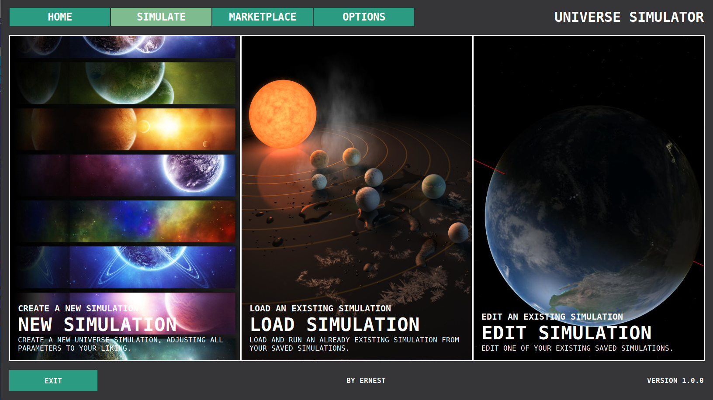
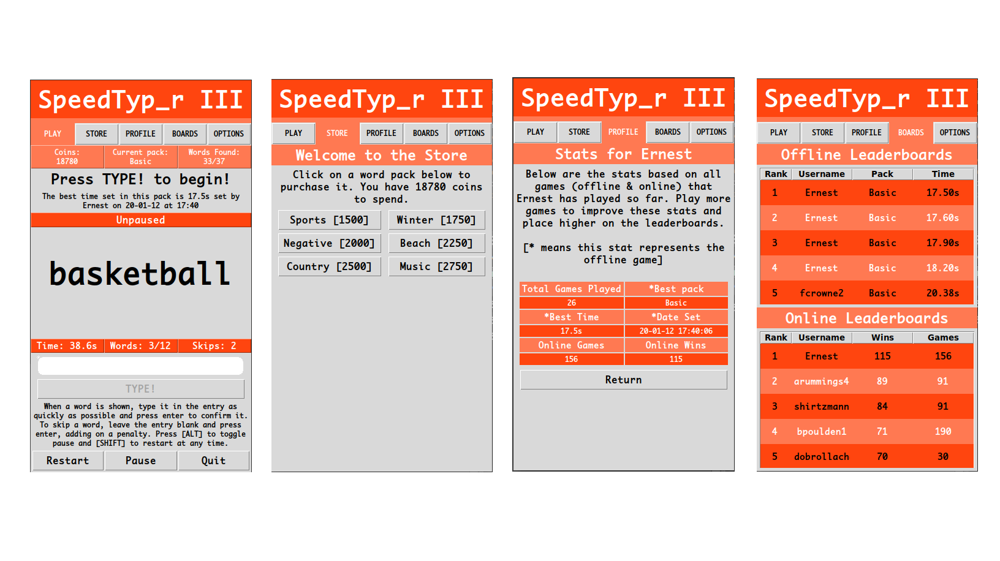
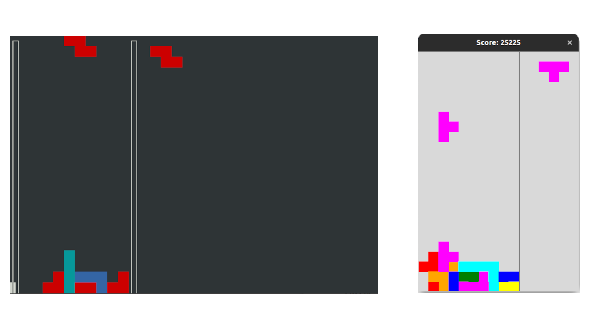

Portfolio
A small subset of projects I'd like to share with you.
-
Go to last slide Go to next slide
Universe Simulator
A desktop-based application giving the user the tools to better visualise our Solar System.
The user can also create their own 3D simulations to better understand orbital mechanics and how they affect celestial bodies.
Each planet the user chooses to add can have its: radius, mass, texture, atmosphere, day length, tidal locking and orbital eccentricity adjusted as well as the option to add a moon to them; the user can also then set the position of each planet (relative to the star) giving them free reign on how they set up their simulation.
Custom backgrounds and textures can be uploaded to personalise the user's simulation even more.
View on GitHub -
Go to previous slide Go to next slide
SpeedTyp_r
A desktop-based typing game which aims to improve both the vocabulary and typing speed of the user.
The aim of the game is simple: type the word you see on the screen as quickly as possible. The user is shown 12 words and is rewarded with in-game currency based on their time taken. This currency is used to unlock new word sets in the game.
In singleplayer, earn coins and set the best times you can to earn a top spot on the leaderboards, yielding bonus rewards.
The multiplayer puts you up against another player in a head-to-head with the winner reaping all the rewards - the loser gets nothing. There are no skips so type accurately.
View on GitHub -
Go to previous slide Go to next slide
Tetris AI
A python program which is able to play a perfect game of Tetris, playing forever until reaching the maximum allowed score.
For each Tetromino the current game context is analysed and then all possible moves for a Tetromino on separate game clones are tried. Each move is then scored based off pre-defined criteria. The highest scoring move is then applied to the real game.
To improve the success rate of the AI, it also looks ahead to the next block (shown in the top right) and plays with it in another game clone. The highest-scoring move for both the current and lookahead block are then applied.
A more detailed explanation of the AI is available on the GitHub page
View on GitHub -
Go to previous slide Go to first slide
2048 AI
A program which is able to play a game of 2048, with it reaching the target score 2048 being guaranteed.
In the same vein as the Tetris AI (previous slide), it works by trying all possible moves for a given block on a clone of the game scores them based on pre-defined criteria. The highest-scoring move is then chosen to play with.
A more detailed explanation of the inner workings of the AI is available on GitHub.
View on GitHub